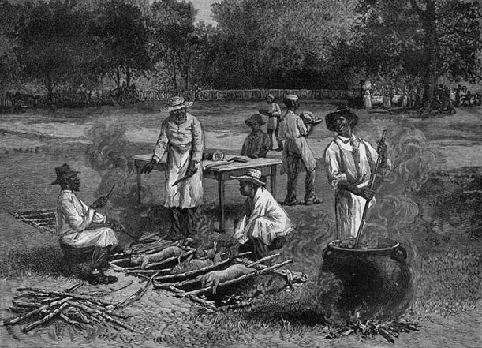

The Skinny
Why Smoking & Grilling Matter
A Southern Barbecue, a wood engraving from a sketch by Horace Bradley, published in Harper’s Weekly, July 1887.
If any gastronomical treat could give the proverbially American apple pie a run for its money, it might just be barbecue. The culinary tradition of cooking meat low and slow over indirect flame (the true definition of barbecue – imposters who grill, take note) has become so prevalent over the years that BBQ itself represents a sort of pop culture, spawning TV shows, historically-focused road trips, and even fusion dishes like BBQ tacos.Barbecue’s ability to reflect whatever might be hot at the time (from reality TV to the taco craze) isn’t new; in fact, barbecue has a long history of permeation, perhaps best experienced by the ongoing barbecue feud that plagues the South. From the Atlantic to the Gulf, bordered by the western outposts of Texas and Kansas City, the area of the United States known as the “barbecue belt” houses four distinct barbecue traditions – Carolina, Texas, Memphis and Kansas City. From where did these traditions come, and how, in a relatively small region of the country, have they evolved along such different paths? The history of American barbecue is as diverse as the variations themselves, charting the path of a Caribbean cooking style brought north by Spanish conquistadors, moved westward by settlers, and seasoned with the flavors of European cultures.
The first indigenous tribes Christopher Columbus encountered on the island he named Hispaniola had developed a unique method for cooking meat over an indirect flame, created using green wood to keep the food (and wood) from burning. Reports indicate that the Spanish referred to this new style of cooking as barbacoa: the original barbecue. As the Spanish explorers who followed Columbus turned their expeditions north, they brought the cooking technique with them. In 1540, close to present-day Tupelo, Mississippi, the Chicksaw tribe, in the presence of explorer Hernando de Soto, cooked a feast of pork over the barbacoa. Eventually, the technique made its way to the colonies, traveling as far north as Virginia.
Barbecue belt residents would argue that the beef-based BBQ of Texas, or the mutton-based BBQ found in Kentucky, doesn’t constitute authentic barbecue. To be real barbecue, purists like North Carolina native Jim Villas (author of an article, first published in Esquire, aptly titled “My Pig Beats Your Cow”) argue that the meat must be exclusively porcine, because the original BBQ-ers of the southern colonies depended on the cheap, low-maintenance nature of pig farming. Unlike cows, which required large amounts of feed and enclosed spaces, pigs could be set loose in forests to eat when food supplies were running low. The pigs, left to fend for themselves in the wild, were much leaner upon slaughter, leading Southerns to use the slow-and-low nature of barbecue to tenderize the meat. And use it they did. During the pre-Civil War years, Southerners ate an average of five pounds of pork for every one pound of cattle. Their dependence on this cheap food supply eventually became a point of patriotism, and Southerners took greater care raising their pigs, refusing to export their meat to the northern states. By this time, however, the relationship between the barbecue and pork had been deeply forged.
Natsha Geiling, The evolution of American Barbecue, July 18, 2013, December 12, 2021, https://www.smithsonianmag.com/arts-culture/the-evolution-of-american-barbecue-13770775/
Grilling
Great grilling requires great technique. No matter if you use charcoal or gas, you can set your grill up to perform either grilling method. Direct grilling means you place the meat right over the hot coals or burners. To set your grill for indirect grilling, turn one or more burners off for propane grills. Pile the hot coals on either side of the center of the grill and cook over the unlit part of the grill if you're using charcoal.
Direct grilling is the fastest method. It uses high heat to cook small pieces of meat quickly. Common foods you grill using this technique include chicken breasts, pork chops, steaks, and fish fillets.
Indirect grilling allows you to cook tough cuts of meat and large pieces "low and slow" to help tenderize the meat all the way through without burning. Common meats you might prepare using this technique include briskets, ribs, whole chickens, and pork shoulders.
Food Lion, Grill Vs. Smokers, April 18, 2019, December 12, 2021, https://www.foodlion.com/fresh-ideas/grills-vs-smokers-differences-between-smoking-and-grilling-meat/
Smoking
Smoking is a complex technique that requires time and patience to achieve the best flavor. You can choose from two techniques: cold smoking and hot smoking. Cold smoking cooks the meat at temperatures between 68F and 86F for anywhere from 12 to 24 hours. It's often used with meats like chicken breasts, salmon, steak, and pork chops and is meant primarily to add flavor. Meats smoked this way first have to be cured. You coat them in salt or soak them in brine before smoking and then cooking them afterward to avoid potentially ingesting harmful bacteria.
Hot smoking breaks the collagen down in the meat to tenderize it while also fully cooking the meat, so you don't have to cure it first. During hot smoking, you keep the smoker temperature at anywhere from 126F to 176F or as hot as 200F to 250F, as recommended by Spoon University. It works equally well for smaller cuts like chicken wings and larger cuts like pork shoulder, brisket, and ham.
Food Lion, Grill Vs. Smokers, April 18, 2019, December 12, 2021, https://www.foodlion.com/fresh-ideas/grills-vs-smokers-differences-between-smoking-and-grilling-meat/